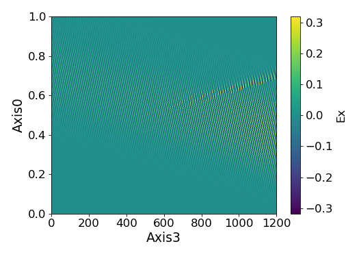
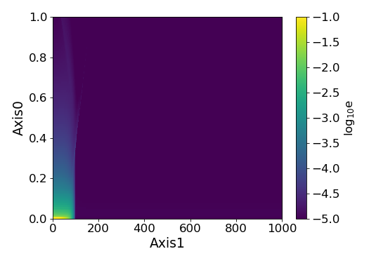
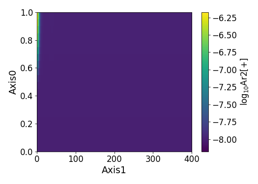
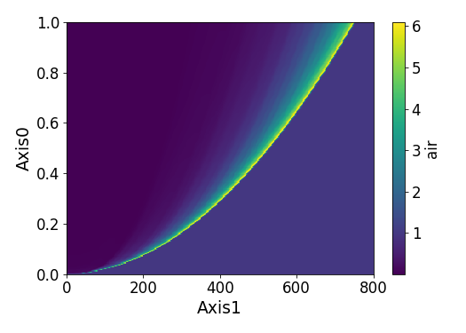
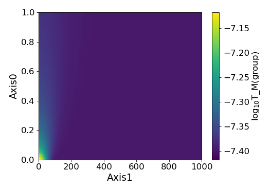
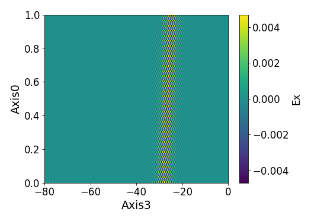
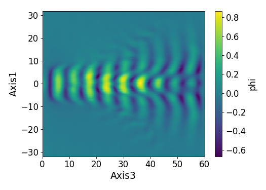
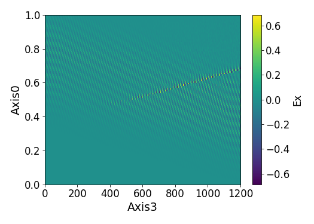
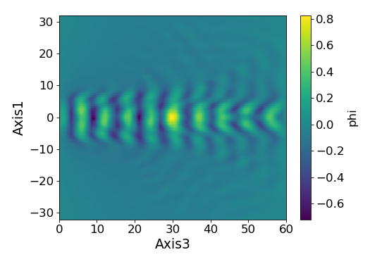

<!DOCTYPE html><html><head><title>TurboWAVE Report</title></head><body><h1>TurboWAVE Test Suite Report</h1><h2>Version Information</h2><p>Date of report : 2018-07-30 07:57:49<p>Requested MPI processes = 4</p><p>Requested OMP threads = 2</p><p>Git status:</p><blockquote><pre>On branch master
Your branch is up-to-date with 'origin/master'.
Changes not staged for commit:
  (use "git add/rm <file>..." to update what will be committed)
  (use "git checkout -- <file>..." to discard changes in working directory)

	modified:   ../.gitignore
	modified:   ../DataViewer.ipynb
	deleted:    fluid-LWFA-PML.txt-By.dvdat.png
	deleted:    fluid-LWFA-coulomb.txt-phi.dvdat.png
	deleted:    fluid-LWFA.txt-By.dvdat.png
	deleted:    fluid-backward-raman.txt-Ex.dvdat.png
	deleted:    fluid-beatwave.txt-phi.dvdat.png
	deleted:    hydro-argon-plasma-1d.txt-e.dvdat.png
	deleted:    hydro-argon-plasma-2d.txt-e.dvdat.png
	deleted:    hydro-laser-excite-1d.txt-Ar2[+].dvdat.png
	deleted:    hydro-laser-excite-2d.txt-Ar2[+].dvdat.png
	deleted:    hydro-simple-1d-shock.txt-air.dvdat.png
	deleted:    hydro-simple-2d-shock.txt-air.dvdat.png
	deleted:    misc-dipole-radiation.txt-Ey.dvdat.png
	deleted:    misc-fluid-pic-hybrid.txt-beam.dvdat.png
	deleted:    misc-regions-2d.txt-electrons.dvdat.png
	deleted:    nonlinear-optics-FS-microsphere.txt-Ex.dvdat.png
	deleted:    nonlinear-optics-soliton.txt-Ex.dvdat.png
	deleted:    pgc-LWFA-Light-Frame-cyl.txt-Ez.dvdat.png
	deleted:    pgc-LWFA-Light-Frame.txt-Ez.dvdat.png
	deleted:    pgc-LWFA-coulomb.txt-phi.dvdat.png
	deleted:    pgc-mori-beatwave-pgc.txt-phi.dvdat.png
	deleted:    pic-LWFA-Lab-Frame.txt-Ez.dvdat.png
	deleted:    pic-LWFA-Light-Frame.txt-rho.dvdat.png
	deleted:    pic-backward-raman.txt-Ex.dvdat.png
	deleted:    pic-corrugated-channel.txt-e.dvdat.png
	deleted:    pic-mori-beatwave-explicit.txt-phi.dvdat.png
	deleted:    quantum-KG-tunneling.txt-psi0_r.dvdat.png
	deleted:    quantum-dirac-tunneling.txt-psi0_r.dvdat.png
	modified:   twreport.html
	modified:   twtest.py
	modified:   ../twutils/twutils/plot.py

Untracked files:
  (use "git add <file>..." to include in what will be committed)

	stdin
	twstat

no changes added to commit (use "git add" and/or "git commit -a")
</pre></blockquote><p>Git last commit:</p><blockquote><pre>commit 3467c0698890f117800cfcd5780b43d664027759
Author: gordon <daniel.gordon@nrl.navy.mil>
Date:   Fri Jul 27 17:55:05 2018 -0400

    test suite tool, twutils.plot

</pre></blockquote><h2>"fluid" Subdirectory</h2><h3>"LWFA-coulomb.txt" Example</h3><p>TW command line = <samp>tw3d -nointeractive -n 4 -c 2</samp></p><p>Completed successfully but with warnings:</p><p><samp>WARNING: Bad decomposition (defaulting to 1x1x4)</samp></p><p>Representative figure:</p><p><h3>"LWFA.txt" Example</h3><p>TW command line = <samp>tw3d -nointeractive -n 4 -c 2</samp></p><p>Completed successfully but with warnings:</p><p><samp>WARNING: Bad decomposition (defaulting to 1x1x4)</samp></p><p>Representative figure:</p><p><h3>"LWFA-PML.txt" Example</h3><p>TW command line = <samp>tw3d -nointeractive -n 4 -c 2</samp></p><p>Completed successfully but with warnings:</p><p><samp>WARNING: Bad decomposition (defaulting to 1x1x4)</samp></p><p>Representative figure:</p><p><h3>"backward-raman.txt" Example</h3><p>TW command line = <samp>tw3d -nointeractive -n 8</samp></p><p>Completed successfully but with warnings:</p><p><samp>WARNING: Bad decomposition (defaulting to 1x1x8)</samp></p><p>Representative figure:</p><p><h3>"beatwave-3d.txt" Example</h3><p>Test not requested, or not a TW input file.</p><h3>"beatwave.txt" Example</h3><p>TW command line = <samp>tw3d -nointeractive -n 4 -c 2</samp></p><p>Completed successfully but with warnings:</p><p><samp>WARNING: Bad decomposition (defaulting to 1x1x4)</samp></p><p>Representative figure:</p><p><h2>"hydro" Subdirectory</h2><h3>"argon-plasma-1d.txt" Example</h3><p>TW command line = <samp>tw3d -nointeractive -n 8</samp></p><p>Completed successfully but with warnings:</p><p><samp>WARNING: Bad decomposition (defaulting to 8x1x1)</samp></p><p>Representative figure:</p><p><h3>"argon-plasma-2d.txt" Example</h3><p>TW command line = <samp>tw3d -nointeractive -n 4 -c 2</samp></p><p>Completed successfully but with warnings:</p><p><samp>WARNING: Bad decomposition (defaulting to 1x1x4)</samp></p><p>Representative figure:</p><p><h3>"laser-excite-1d.txt" Example</h3><p>TW command line = <samp>tw3d -nointeractive -n 8</samp></p><p>Completed successfully but with warnings:</p><p><samp>WARNING: Bad decomposition (defaulting to 8x1x1)</samp></p><p><samp>WARNING: pulse declared before laser solver</samp></p><p>Representative figure:</p><p><h3>"laser-excite-2d.txt" Example</h3><p>TW command line = <samp>tw3d -nointeractive -n 4 -c 2</samp></p><p>Completed successfully but with warnings:</p><p><samp>WARNING: Bad decomposition (defaulting to 1x1x4)</samp></p><p><samp>WARNING: pulse declared before laser solver</samp></p><p>Representative figure:</p><p><h3>"simple-2d-shock.txt" Example</h3><p>TW command line = <samp>tw3d -nointeractive -n 4 -c 2</samp></p><p>Completed successfully.</p><p>Representative figure:</p><p><h3>"simple-1d-shock.txt" Example</h3><p>TW command line = <samp>tw3d -nointeractive -n 8</samp></p><p>Completed successfully but with warnings:</p><p><samp>WARNING: Bad decomposition (defaulting to 8x1x1)</samp></p><p>Representative figure:</p><p><h3>"simple-shock.nb" Example</h3><p>Test not requested, or not a TW input file.</p><h3>"single-frame-diagnostic.txt" Example</h3><p>Test not requested, or not a TW input file.</p><h3>"simple-diffusion.txt" Example</h3><p>TW command line = <samp>tw3d -nointeractive -n 8</samp></p><p>Completed successfully but with warnings:</p><p><samp>WARNING: Bad decomposition (defaulting to 8x1x1)</samp></p><p>Representative figure:</p><p><h2>"misc" Subdirectory</h2><h3>"dipole-radiation.txt" Example</h3><p>TW command line = <samp>tw3d -nointeractive -n 4 -c 2</samp></p><p>Completed successfully but with warnings:</p><p><samp>WARNING: Bad decomposition (defaulting to 1x1x4)</samp></p><p>Representative figure:</p><p><h3>"fluid-pic-hybrid.txt" Example</h3><p>TW command line = <samp>tw3d -nointeractive -n 4 -c 2</samp></p><p>Completed successfully but with warnings:</p><p><samp>WARNING: Bad decomposition (defaulting to 1x1x4)</samp></p><p><samp>WARNING: beam will be absorbed.</samp></p><p>Representative figure:</p><p><h3>"performance-3d.txt" Example</h3><p>Test not requested, or not a TW input file.</p><h3>"regions-3d.txt" Example</h3><p>TW command line = <samp>tw3d -nointeractive -n 4 -c 2</samp></p><p>Completed successfully but with warnings:</p><p><samp>WARNING: Bad decomposition (defaulting to 1x1x4)</samp></p><p>Representative figure:</p><p><h3>"regions-2d.txt" Example</h3><p>TW command line = <samp>tw3d -nointeractive -n 4 -c 2</samp></p><p>Completed successfully.</p><p>Representative figure:</p><p><h2>"nonlinear-optics" Subdirectory</h2><h3>"FS-microsphere.txt" Example</h3><p>TW command line = <samp>tw3d -nointeractive -n 4 -c 2</samp></p><p>Completed successfully but with warnings:</p><p><samp>WARNING: Bad decomposition (defaulting to 1x1x4)</samp></p><p>Representative figure:</p><p><h3>"soliton.txt" Example</h3><p>TW command line = <samp>tw3d -nointeractive -n 8</samp></p><p>Completed successfully but with warnings:</p><p><samp>WARNING: Bad decomposition (defaulting to 1x1x8)</samp></p><p>Representative figure:</p><p><h2>"pgc" Subdirectory</h2><h3>"LWFA-coulomb.txt" Example</h3><p>TW command line = <samp>tw3d -nointeractive -n 4 -c 2</samp></p><p>Completed successfully but with warnings:</p><p><samp>WARNING: Bad decomposition (defaulting to 1x1x4)</samp></p><p>Representative figure:</p><p><h3>"LWFA-Light-Frame.txt" Example</h3><p>TW command line = <samp>tw3d -nointeractive -n 4 -c 2</samp></p><p>Completed successfully but with warnings:</p><p><samp>WARNING: Bad decomposition (defaulting to 1x1x4)</samp></p><p><samp>WARNING: electrons will be absorbed.</samp></p><p>Representative figure:</p><p><h3>"LWFA-coulomb-cyl.txt" Example</h3><p>Test not requested, or not a TW input file.</p><h3>"LWFA-Light-Frame-cyl.txt" Example</h3><p>TW command line = <samp>tw3d -nointeractive -n 4 -c 2</samp></p><p>Completed successfully but with warnings:</p><p><samp>WARNING: e will be absorbed.</samp></p><p>Representative figure:</p><p><h3>"beatwave-3d.txt" Example</h3><p>Test not requested, or not a TW input file.</p><h3>"mori-beatwave-pgc.txt" Example</h3><p>TW command line = <samp>tw3d -nointeractive -n 4 -c 2</samp></p><p>Completed successfully but with warnings:</p><p><samp>WARNING: Bad decomposition (defaulting to 1x1x4)</samp></p><p>Representative figure:</p><p><h2>"pic" Subdirectory</h2><h3>"LWFA-Light-Frame.txt" Example</h3><p>TW command line = <samp>tw3d -nointeractive -n 4 -c 2</samp></p><p>Completed successfully.</p><p>Representative figure:</p><p><h3>"LWFA-Lab-Frame.txt" Example</h3><p>TW command line = <samp>tw3d -nointeractive -n 4 -c 2</samp></p><p>Completed successfully.</p><p>Representative figure:</p><p><h3>"LWFA-Light-Frame-3d.txt" Example</h3><p>Test not requested, or not a TW input file.</p><h3>"backward-raman.txt" Example</h3><p>TW command line = <samp>tw3d -nointeractive -n 8</samp></p><p>Completed successfully but with warnings:</p><p><samp>WARNING: Bad decomposition (defaulting to 1x1x8)</samp></p><p><samp>WARNING: e will be absorbed.</samp></p><p>Representative figure:</p><p><h3>"corrugated-channel.txt" Example</h3><p>TW command line = <samp>tw3d -nointeractive -n 4 -c 2</samp></p><p>Completed successfully but with warnings:</p><p><samp>WARNING: Bad decomposition (defaulting to 1x1x4)</samp></p><p>Representative figure:</p><p><h3>"mori-beatwave-explicit.txt" Example</h3><p>TW command line = <samp>tw3d -nointeractive -n 4 -c 2</samp></p><p>Completed successfully but with warnings:</p><p><samp>WARNING: Bad decomposition (defaulting to 1x1x4)</samp></p><p>Representative figure:</p><p><h2>"quantum" Subdirectory</h2><h3>"KG-tunneling.txt" Example</h3><p>TW command line = <samp>tw3d -nointeractive -n 4 -c 2</samp></p><p>Completed successfully but with warnings:</p><p><samp>WARNING: Bad decomposition (defaulting to 1x4x1)</samp></p><p>Representative figure:</p><p><h3>"bohmians.txt" Example</h3><p>TW command line = <samp>tw3d -nointeractive -n 4 -c 2</samp></p><p>Completed successfully but with warnings:</p><p><samp>WARNING: Bad decomposition (defaulting to 1x1x4)</samp></p><p><samp>WARNING: test will be absorbed.</samp></p><p>Representative figure:</p><p><h3>"dirac-tunneling.txt" Example</h3><p>TW command line = <samp>tw3d -nointeractive -n 4 -c 2</samp></p><p>Completed successfully but with warnings:</p><p><samp>WARNING: Bad decomposition (defaulting to 1x4x1)</samp></p><p>Representative figure:</p><p><h3>"z92_c00.txt" Example</h3><p>Test not requested, or not a TW input file.</p><h3>"z92_c00+.txt" Example</h3><p>Test not requested, or not a TW input file.</p></body></html>
